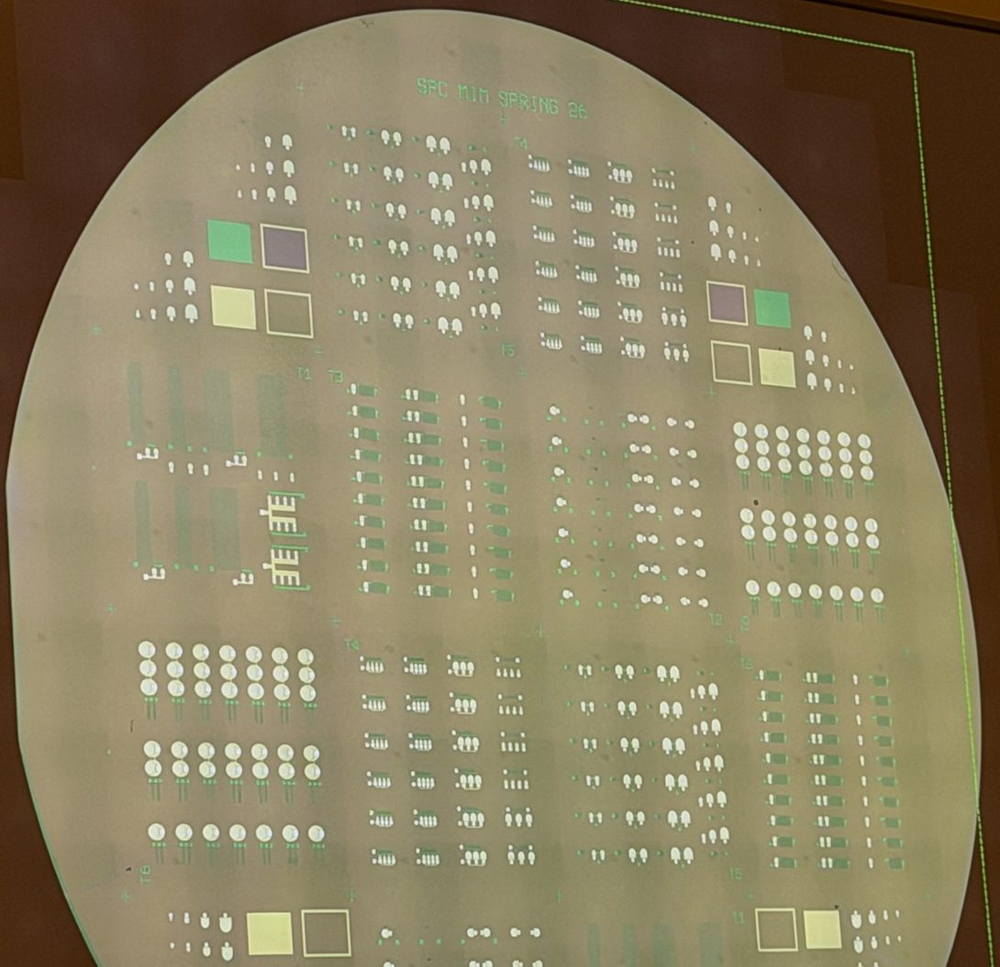
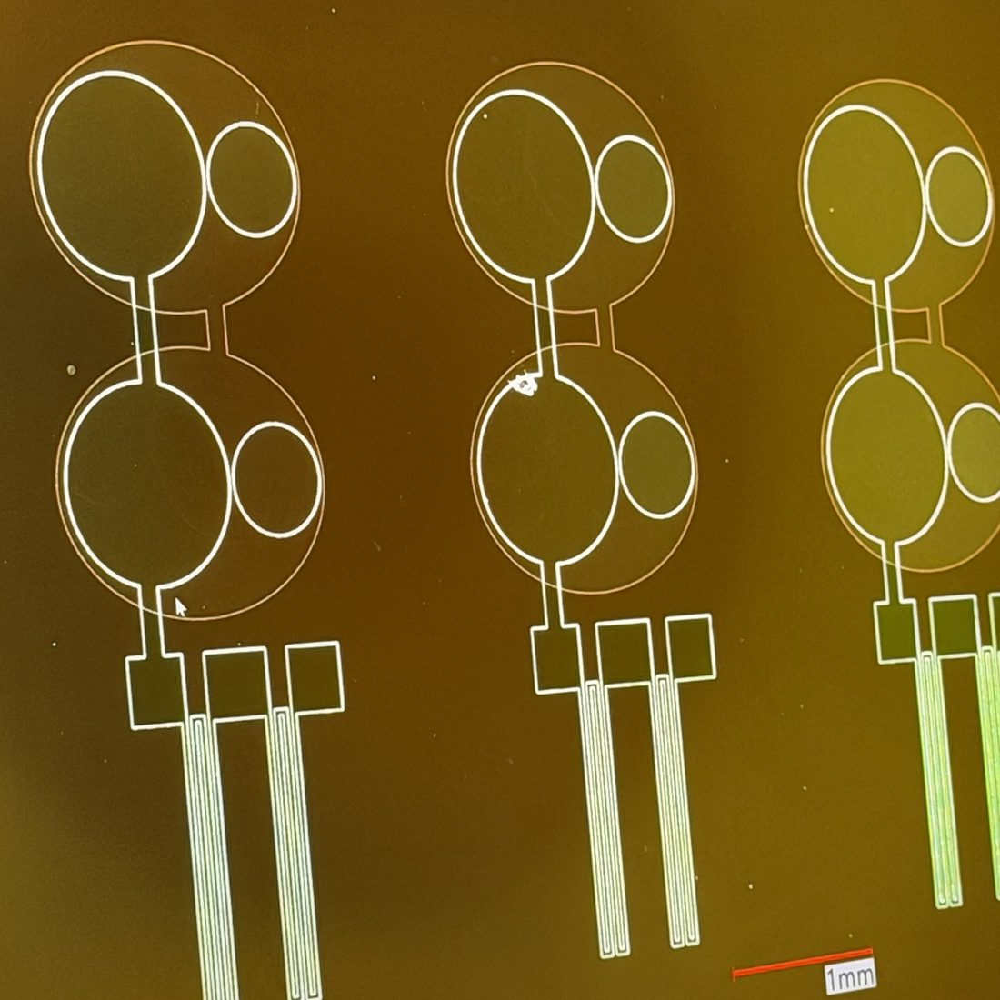
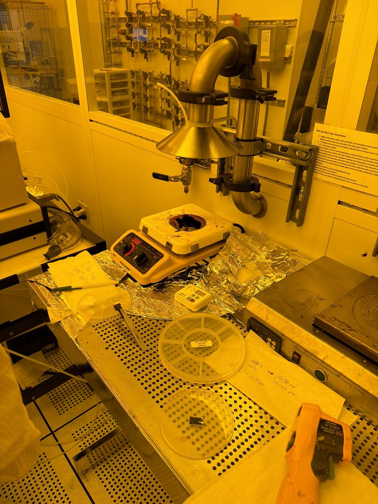
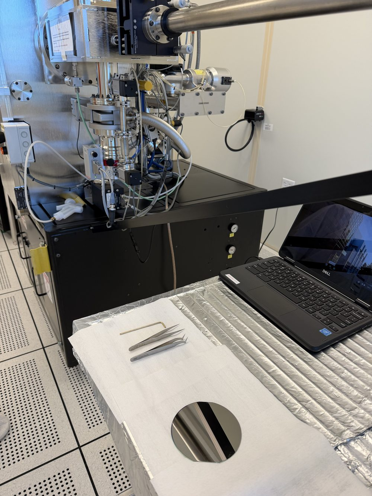
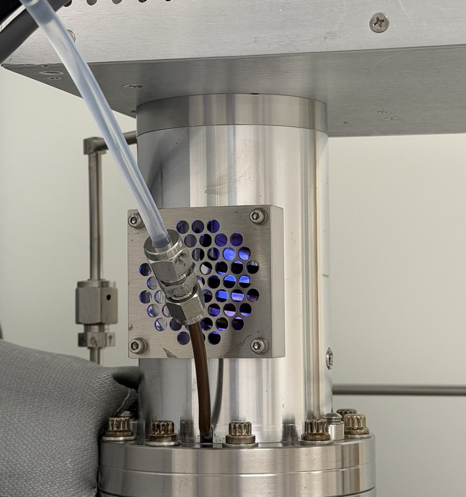
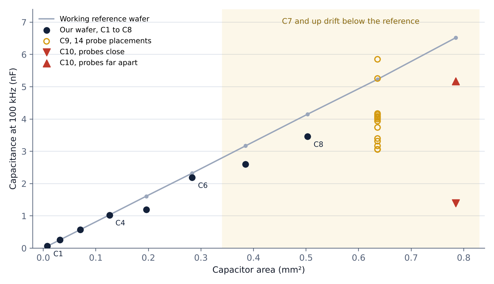

- 10
- standalone capacitors probed, 100 to 1000 µm across
- C1 to C6
- track a known-good reference wafer
- 3.7×
- swing on one capacitor from probe placement alone
- 2.2 nF
- our circuit's design value, inside the stable range
- Program
- VIP Semiconductors@Birck, SPC Etch team
- Devices
- Thin-film resistors and HfO₂ capacitors, RC and RLC circuits
- Substrate
- 4-inch Si wafers with thermal SiO₂
- Flow
- 3 masks: lift-off metal, ALD dielectric, ICP-RIE via etch
- Analysis
- Control charts and variance breakdown in JMP
- My role
- E-beam metal deposition, lithography, electrical probing
01
What we're building
The team builds simple passive circuits the way a fab would: deposit, pattern, etch, measure, repeat. Every step leaves a fingerprint on the final electrical numbers. A capacitor's value depends on how thick the HfO₂ came out, how cleanly the vias etched, and how well the top metal landed. That makes the circuits a good test vehicle for process control, because the probe station can tell you something went wrong upstream.

02
The process flow
Seven main steps, with a measurement after each one so variation can be traced back to the step that caused it.
- Litho 1Pattern the bottom electrode
AZ1518 resist spun at 4000 RPM, 110 °C softbake, hard-contact exposure on the MA6, develop in MF-26A.
- PVD 1E-beam Ti / Ni / Pd, then lift-off
Metal goes down everywhere, and an acetone soak lifts it off wherever resist was. Step height checked on the AFM.
- ALDHfO₂ dielectric
Thermal ALD on the Fiji at 200 °C, 200 cycles. Thickness measured on the Woollam ellipsometer.
- Litho 2Pattern the vias
Same resist recipe with mask 2.
- RIEEtch through the HfO₂
Plasma-Therm Apex ICP-RIE, BCl₃ / Cl₂ / Ar chemistry. Etch depth checked on the AFM. This is the step our team charts.
- Litho 3Pattern the top metal
Same resist recipe with mask 3.
- PVD 2E-beam Ti / Al, then lift-off
Top contacts and interconnect. Step height on the AFM, then the wafer goes to the probe station.
03
In the cleanroom
I'm trained on four Birck tools: the e-beam evaporator, the MA6 mask aligner, the Fiji ALD, and the Woollam ellipsometer. On the team I own the e-beam metal deposition step.
A full lithography pass
One session took a wafer from bare to inspected: spin coat on Spinner 3, align and expose on the MA6, develop, then a short oxygen plasma in the Tergeo cleaner to clear the thin resist scum that development leaves behind. Skip that descum and the metal can lift off with the resist, or not stick at all.
We finished with a stitched full-wafer image on the Keyence, the one at the top of this page. Looking at the whole wafer at once is the quickest way to spot underdeveloped corners or a pattern that drifts from center to edge before you commit metal to it.



- E-beam evaporator
- MA6 mask aligner
- Fiji ALD
- Woollam M-2000
- Spinner 3
- Tergeo plasma cleaner
- Keyence VHX-7000
- Probe station
04
Probing the capacitors
Once a wafer is done, the real question is whether the devices match the design. Each die has ten standalone test capacitors, C1 through C10, with the pad diameter growing 100 µm per step. Since capacitance scales with area, they should land on a straight line. We probed them with an LCR meter at 100 kHz and plotted the results against a known-good wafer from earlier in the program.

The small capacitors behave. C1 through C6 track the reference, with one outlier at C5. From C7 up, the values fall consistently below the line, about 17 to 18% low on C7 and C8.
The big ones are where it gets strange. We probed C9 at 14 different spots and got anywhere from 3.06 to 5.85 nF. On C10, probes close together read 1.39 nF and probes at the far edges read 5.17 nF, about 3.7 times higher on the same device. Part of what we were measuring was the setup, not the capacitor.
It doesn't hurt our circuit. The RC design uses two C4-sized capacitors in parallel, about 2.2 nF, which sits right in the range that matches the reference. But it showed how much a measurement can move on placement alone, and that changed how we probe.
What could explain it
- Fringing fields at the pad edges adding stray capacitance
- Leftover HfO₂ from an incomplete via etch
- Contact resistance that changes with tip placement
- An open correction done at the wrong probe spacing
What we're doing next
- Repeat touchdowns on one device to measure contact repeatability
- Sweep frequency to separate parasitics from true capacitance
- Redo the open correction at the real probe spacing
- Record and standardize where the tips land on every pad
05
Why process control
A single good wafer proves the recipe can work. SPC is about whether it works every time, and what to blame when it doesn't. A few ideas shape how I think about our data:
Two levels of variation
Spread across one wafer and drift from one wafer to the next have different causes, so they get charted separately. Within-wafer spread points at uniformity, like plasma density or film thickness. Wafer-to-wafer drift points at the chamber or the recipe changing over time.
The first wafer is different
A cold or freshly cleaned etch chamber often runs differently on its first wafer. Fabs handle this with warm-up or seasoning wafers so the first product wafer isn't the one that absorbs it. On a student team running a few wafers at a time, that effect can look like a real trend if you don't plan for it.
Trust the gauge first
Before a control chart means anything, the measurement has to be repeatable. Gauge R&R separates variation in the parts from variation in the measuring, and the C9 and C10 readings above are a live example of why: if tip placement moves the number, that noise lands on the chart looking like process variation. We do the analysis in JMP in the probe room.
06
What's next
Probe station training is the next step, so I can run the electrical measurements on my own. I've also requested training on the Plasma-Therm Apex ICP-RIE, the tool our team charts, and the Filmetrics F40-UV for film thickness. The team presents results at Birck's fall poster session, which industry partners attend.